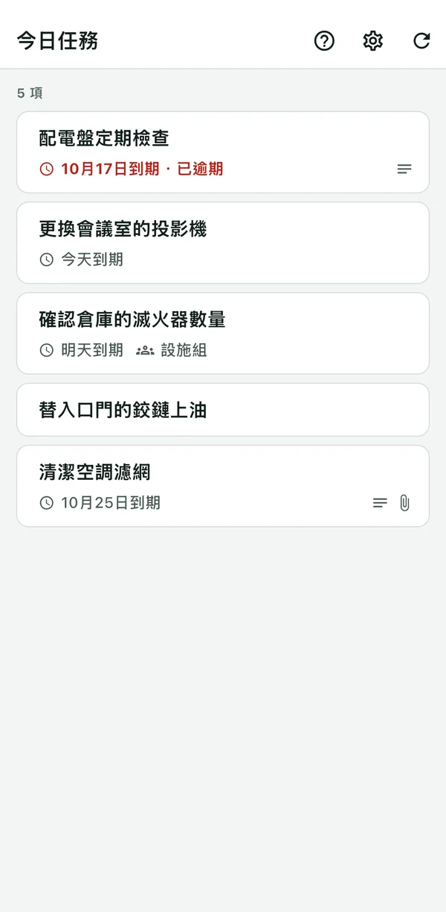
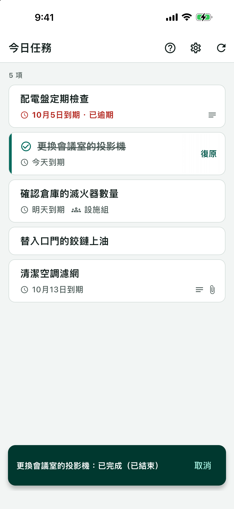
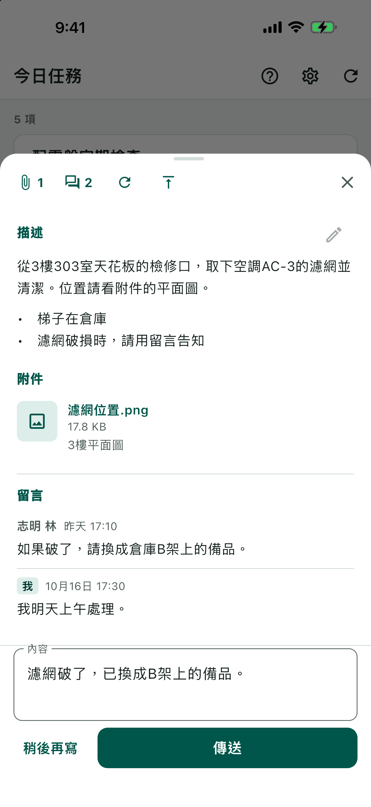

查看負責的任務。
查看指派給自己或所屬群組的未完成任務。開啟任務即可閱讀說明及查看附件圖片。

總是等回到電腦前才更新 Redmine 嗎？使用 BeatMine，工作一完成就能用手機更新 Redmine。即時與團隊分享進度，一起推動專案向前。
免費使用
適用於 iPhone · iOS 15 以上

支援 Redmine 6.0 / 6.1 / 7.0 · 查看連線條件
如果您總是回到電腦前才更新 Redmine，不妨直接在現場處理。BeatMine 會將完成狀態與留言記錄在原本的 Redmine，團隊可以像平常一樣查看。
確認工作內容，
再於現場更新任務。
查看指派給自己或所屬群組的未完成任務。開啟任務即可閱讀說明及查看附件圖片。

工作完成後，將任務向右滑動。您可以在畫面上確認是否已更新至 Redmine。
記下更換的零件，或留下給下一位負責人的注意事項。留言會儲存在 Redmine 的任務歷程中。
任務資料直接在 iPhone 與您的 Redmine 之間傳送。開發者不收集任務資料。API 金鑰會保存在裝置的安全儲存空間中。
隱私權政策 →連線至團隊原本使用的 Redmine。如果不確定是否已啟用 REST API，請向 Redmine 管理員確認。
依 Redmine 的設定而定，可能無法連線或使用部分功能。
連線條件與限制 →免費使用
適用於 iPhone · iOS 15 以上
